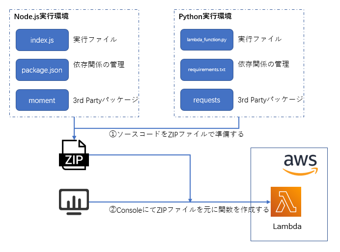
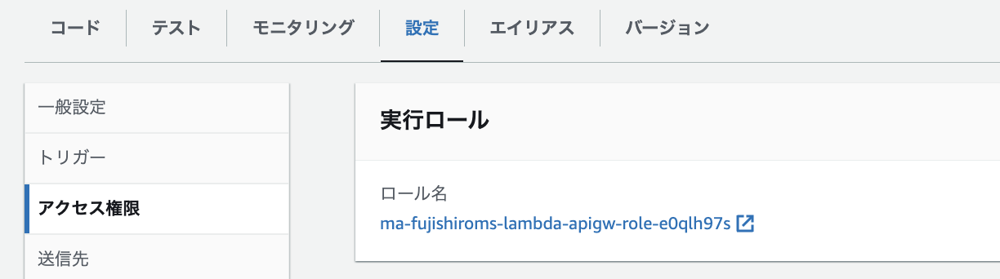
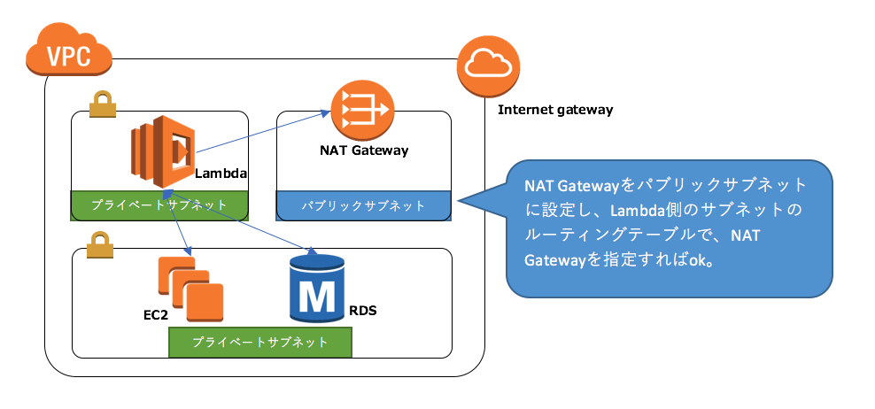
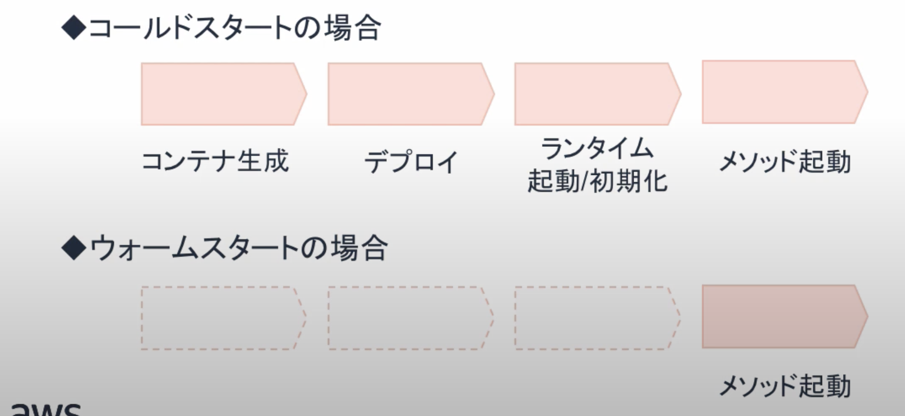

9. Lambda¶
サーバーのプロビジョニングや管理なしでプログラムを実行できるサービス
9.1. Lambdaのメリット¶
コードの実行やスケーリングをLambada側で実施するので、開発者はコーディングに集中できる。
9.2. Lambdaの詳細¶
9.2.1. 費用¶
Lambdaの料金は、リクエストベースで利用した分の従量課金。 サーバーレスの特徴の通り、利用した分だけ（価値の分）だけ金額がかかる
実行回数×実行時間（単価は確保したメモリに依存）
9.2.2. Lambda関数¶
Lambdaで実行するソースコードとそのソースコードを実行するランタイムを合わせてLambda関数と呼ぶ
9.2.2.1. ランタイム¶
対応している言語としては以下が挙げられるが、サポートされていない言語についてもカスタムランタイムから利用可能
Java
Go
PowerShell
Node.js
C#
Python
RUby
9.2.2.2. ハンドラ¶
ハンドラで、Lambdaが実行されることで呼び出す関数を指定する、 デフォルトではlabmda_function.lambda_handlerが呼び出される
9.2.2.3. コンテナの利用¶
ECRにPushされているDocker Imageを利用して、処理をさせることも可能。 Lambdaで準備されていない依存関係やランタイムを設定しないで済むため、ローカルで動作確認さえしておけばLambdaでも処理できることが担保されている。
9.2.3. 依存関係の解決¶
Lambda標準で同梱していないモジュールを利用したい場合は、依存関係を解決した資材一式をZipFileとしてまとめて、コンソールからDLする。
※この設定から、CFNでLambdaのResourceにZipFileセクションでソースコードを書く

9.2.4. 環境設定¶
アプリケーションの実行に必要なライブラリやパッケージをランタイムとして設定する。
9.2.4.1. メモリ¶
CPUは設定することができないが、メモリスペックを設定することができる。
Lambdaでは関数の実行時に使用できるメモリ量は128 MB～10,240 MB の値を 1 MB 単位で設定することができます。
CPI能力は確保するメモリの量に比例することとなる
9.2.4.2. タイムアウト値¶
最大で900sec(15min)となるので、Lambdaで15分以上の処理を実行することはできない
9.2.4.3. IAMロール¶
Lambdaが実行する処理の内容に応じて、認可情報を付与する必要があるので、IAM Roleを作成して、実行ロールとして設定する

9.2.4.4. ストレージ¶
展開パッケージのサイズは250MBに制限されており、そのサイズを超えた場合は、/tmpにアップロードする。/tmpの容量は512MB
9.2.5. Lambdaのネットワーク¶
Lambdaは基本的に、VPC外に作成される。 VPCを明示的に指定することで、LambdaをVPC内から呼び出すことができる。
注意点として、VPC内でLambdaを利用する場合は、プライベートIPは割り振られるが、パブリックIPは割り振られない。 外部へのアクセスをする場合は、NAT GWの設定と、セキュリティグループの確認が必要となる。

9.2.6. 同時実行数¶
Lambdaのある時点における実行している関数の数を同時実行数と呼ぶ。
同時実行数は以下の式で算出する。
同時実行=（1秒あたりの呼び出し数）x（平均実行時間（秒））
Lambdaはリージョンごとに最大同時実行数が決まっており、これを超える同時実行数を同時に捌きたい場合は別途申請が必要となる。 東京の最大同時実行数は1000であり、Lambdaではリクエストとコンテナ数が1対1となるので、1000以上のリクエストを同時に捌きたい場合は申請が必要となる。
注意点として、Lambdaの最大実行数はLambda関数全体で共有している。すなわち、Lambda-AとLambda-Bが存在するときに合計で1000の実行数となる。
9.2.7. 環境変数¶
Lambdaには環境変数を設定することができる。
9.2.7.1. 環境変数の暗号化¶
例えば、githubにLambda関数をアップロードした際に環境変数は平文で置かれてしまうので、パスワードなどを公開するのは危険。
対策として環境変数はオプションとして、KMSによる暗号化が準備されている。以下の暗号化が行われる
保管時の暗号化
伝送時の暗号化

暗号化の手順
KMSでカスタマー管理のカスタマーキーを作成する
Lambdaで環境変数を設定
暗号化ヘルパーを有効化する（暗号化ボタンが出現）
KMSで作成したカスタマーキーを指定する
暗号化ボタンを押下する
LambdaにKMSへのアクセス権限付与
Lambdaの中で復号化して環境変数を利用するss
9.2.8. Lambda関数のライフサイクル¶
Lambdaの実態は、EC2(Amazon Linux)かDockerコンテナであり、以下の順序を踏んで実行される
コンテナ作成
デプロイパッケージのロード
デプロイパッケージの展開
ランタイム起動
関数の実行
コンテナの破棄
Lambdaのコンテナを再利用するか否かで、処理の速度が変わり、ウォームスタートとコールドスタートと呼ぶ。
ウォームスタート：Lambdaに継続的なリクエストが飛んできている場合、1-4のプロセスはスキップされて、5から処理される。
コールドスタート：コンテナが不要と判断されると破棄されてしまうので、1番からやり直しとなる。

9.2.8.1. Provisioned Concurrency¶
性能要件が厳しい場合は、事前にプロビジョニングしておくことが可能
9.2.9. バージョン¶
Lambda関数はバージョニング機能があるが、バージョンとして公開されると編集することができない点に注意
9.2.10. エイリアス¶
エイリアスとはLambda関数の別名であり、prd,stg,devなどを設定できる。 エイリアスは同名で２つまで付与することができるので、エイリアスでルーティングをするとカナリアリリースを実現することができる。
9.2.11. Layers¶
複数のLambda関数が共通で利用するライブラリをZIPファイルで切り出して共有する機能 1つのLambda関数から最大5つのLayerを利用することができる。
9.2.12. 一時ファイル¶
Lambdaは512MBの一時ファイルを/tmpとして持つ。
注意が必要なのは、Lambdaが連続で起動している時に、tmpが共有されてしまうこと。
9.2.13. 署名付きURL¶
AWS SDKやCLIを利用することでSTSの機能によって一時的にS3へアクセス可能なURLを発行させることができる。
9.2.14. デッドレターキュー¶
非同期呼び出しの場合、2回まで再実行を設定することができる（合計3回実行される）
再実行の設定は、Lambda関数のDeadLetterConfigパラメーターによって行う。 DeadLetterConfigに、Amazon SQSのARNを指定することでDLQを送信できる。
9.3. Lambdaの呼び出しかた分類¶
Lambdaは呼び出し元のサービスによって、呼び出され方が異なる。
Lambdaを実行(Invoke)するときにInvokeTypeを選択することができる。

４つの種別については、以下のような分類がある。
 大きな分類手である、ポーリングとはLambdaがイベントを取りに行くのか、呼ばれるのかの分類である。
大きな分類手である、ポーリングとはLambdaがイベントを取りに行くのか、呼ばれるのかの分類である。
9.3.1. ①Lambda関数を同期的に呼び出す(InvokeType:RequestResponse)¶
Lambdaを呼び出したら、その実行が完了するのを待つ。
イベント元に実行結果を返す。
エラー発生時にはエラーがレスポンスされるので、CloudWatch Logsのサブスクリプションフィルタなどを利用する。
※S3のイベント契機をSQSで受け取ってLambdaがポーリングする場合同期処理になる点に注意。
9.3.2. ②Lambda関数を非同期的に呼び出す(InvokeType:Event)¶
イベント型のAWSサービスは非同期となる(S3/SNS/CloudWatch Events/EventBridge)
Lambdaを呼び出すと、一旦Lambda内のQueueに格納されてからLambdaが実行される。 イベントソースには、キューへの格納成功だけが返されるので、結果は返されない。
エラー時の挙動はリトライ設定がある(最大2回の再実行で合計3回実行)
呼び出し元に通知はいかないので、デッドレターキューなどを利用する。

9.3.3. ③Lambdaがイベントを読み取る(イベントソースマッピング)¶
Lambdaが新しいイベントがないがないかポーリングする。
9.3.4. DryRun¶
InvocationTypeにDryRunを指定すると、実際に実行をせずにパラメータの値を検証してIAM権限があることを確認することができる。
9.3.5. 呼び出し方に応じたエラーハンドリング¶
同期処理の場合（1-a）
結果をそのままレスポンスに埋め込んで返却するので、CloudWatchに流れていく。 そのため、エラーに応じた通知などはLambdaをもう一つ作成して処理を作り込む必要がある。非同期処理の場合(1-b)
イベントを受け付けると、Lambdaの処理中にエラーが発生しても2回リトライされる。 処理が以上終了しても呼び出し元へ通知はされないがその代わりデッドレターキューをSNSやSQSで定義することができる。この情報を利用して、通知の設定することが可能。
注意点として、SQSとLambdaを組み合わせた場合は、同期呼び出しとなるため、LambdaのDLQや送信先機能を利用できない。 SQS側でRedrivePolicyを設定してあげて、最大受信数やDLQのARNを指定する。